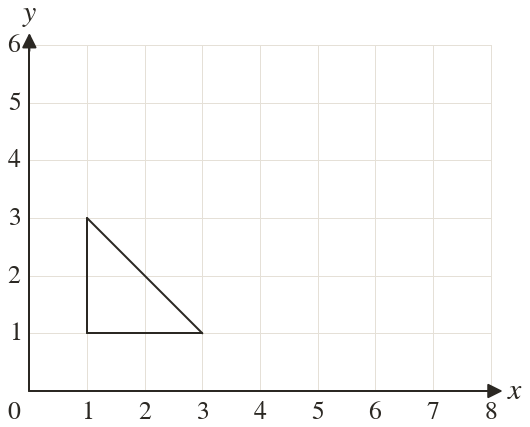
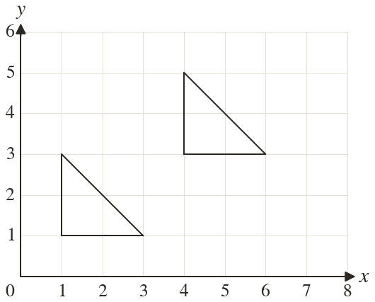
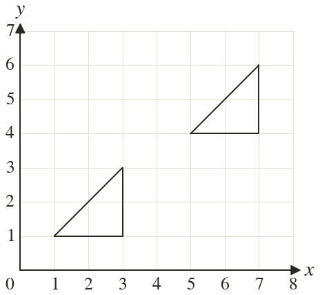

Westonbirt Maths · Transformations
Translating with Column Vectors
Name: ______________________ Date: ____________
1
Translate the triangle by the vector . Write down the corners of the image.
2
Translate the triangle by the vector . Write down the corners of the image.
3
The point is translated by . Where does it go?
4
The point is translated by . Where does it go?
5
Write the column vector that moves a shape right and down.
Ext
A point is translated by and ends at Where did it start?



